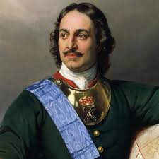

Почему новый год отмечают 1 Января?
320 лет назад, 20 декабря 1699 года, согласно указу Петра I, празднование Нового Года в России было перенесено на 1 января.
Разумеется, это не означало, что до этой даты Новый Год в нашей стране не отмечали. Совсем нет, отмечали, конечно! Как, наверное, и в любой без исключения стране мира. Судя по всему, склонность к таким праздникам заложена в самой человеческой природе. Вроде большинство людей умом понимают, что изменения к лучшему достигаются только напряженным трудом и ничем другим. Однако же, все равно в душе продолжают надеяться на «маленькое нумерологическое чудо»: в какой-то, сам по себе вполне обычный, день, все неприятности, как по мановению волшебной палочки, останутся в прошлом, а впереди будет маячить исключительно светлое и счастливое будущее.
Хотя чисто психологически такой настрой и вправду может немного помочь человеку настроиться на оптимизм, ввиду чего действительно можно добиться куда больших успехов, чем ранее. В духе шутливой, но на самой деле очень мудрой максимы из новогодней кинокомедии «Чародеи»: «Главное – это видеть цель, верить в себя и не замечать препятствий!»
Как бы там ни было, но у празднования Нового Года очень длинная история. В Римской империи еще с дохристианских времен его было принято отмечать 1 января. В Византии с 4-го века н. э. год начинался 1 марта, даты «сотворения мира» по Библии. В части стран Европы, а также и на Руси, «первомартовский» календарь также имел место примерно до 1492 года.
